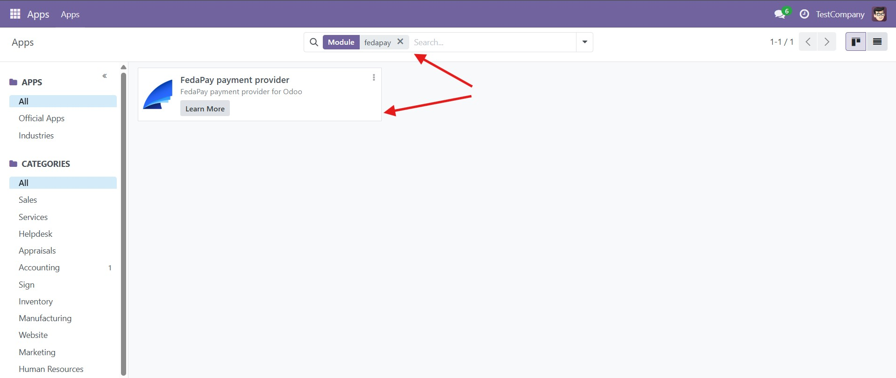
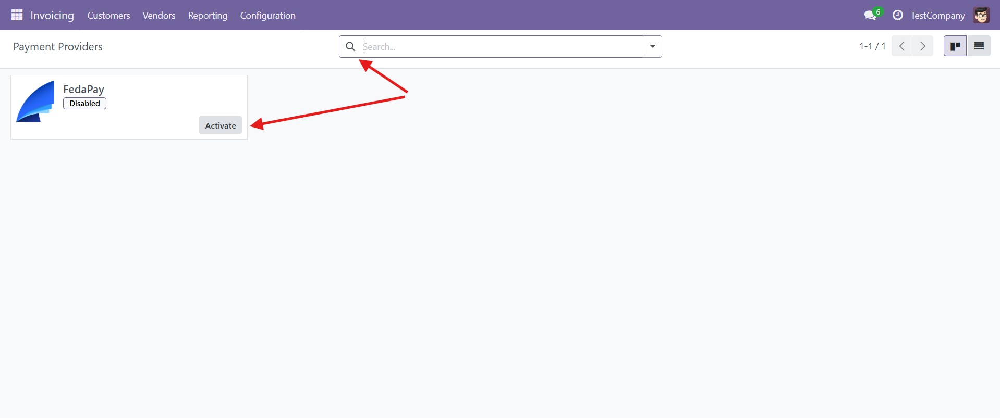
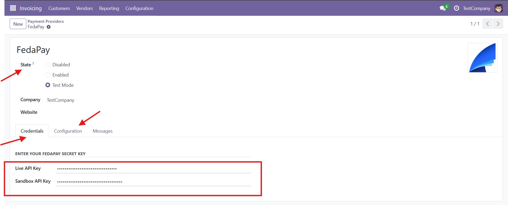
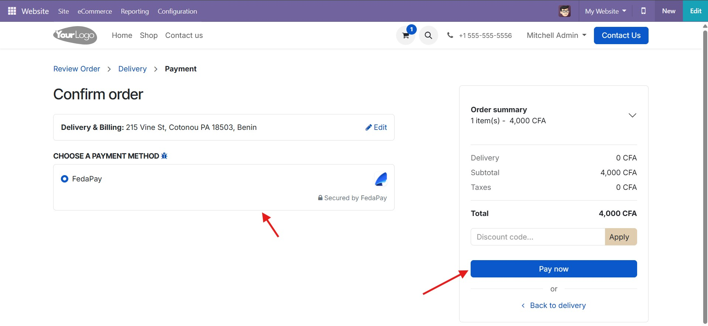
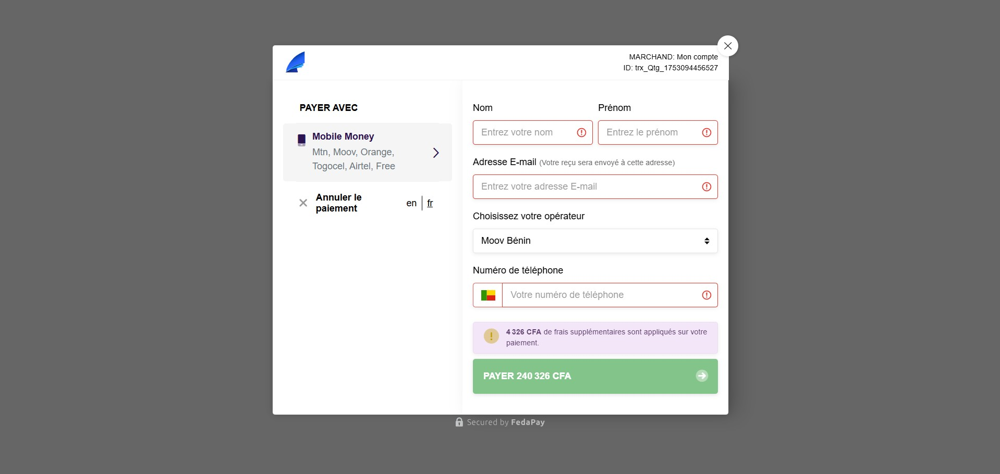
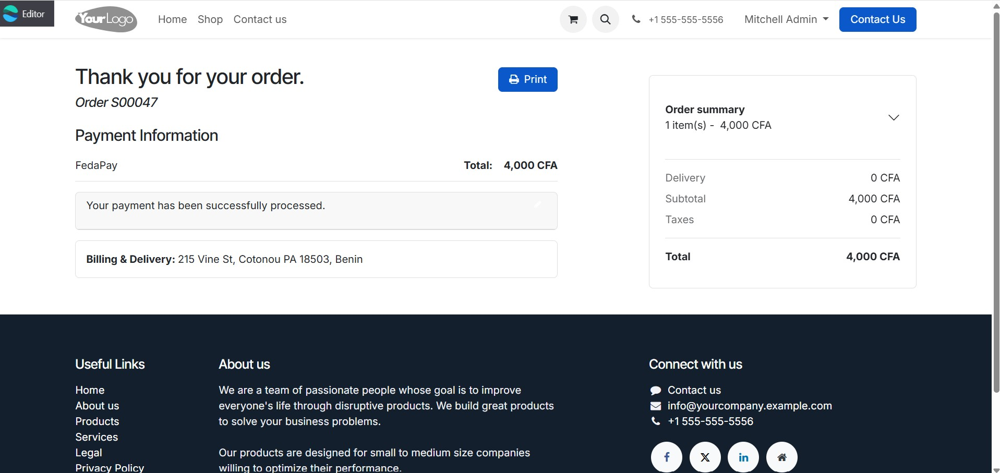
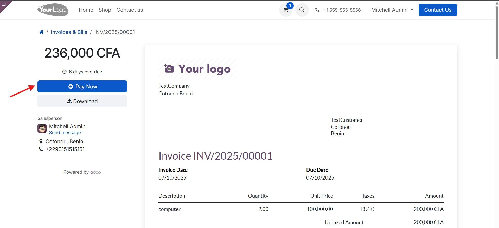
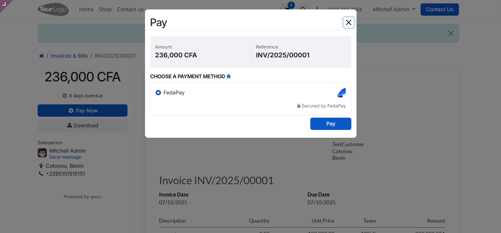
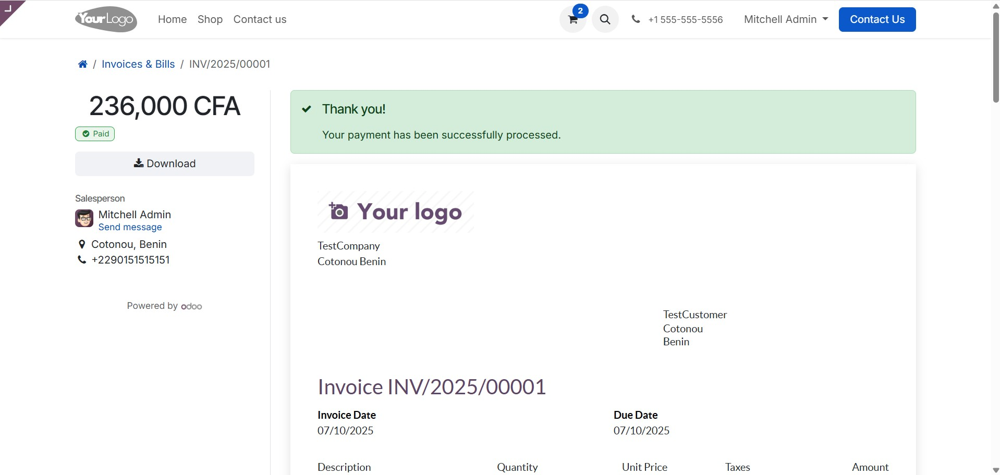

This module extends your Odoo environment, allowing you to accept credit card and mobile money payments easily and securely through FedaPay Checkout.
Follow these steps to configure the FedaPay payment provider within your Odoo environment.



Once the FedaPay provider is configured, you can test its integration through a ecommerce or invoicing scenario. Follow these steps





